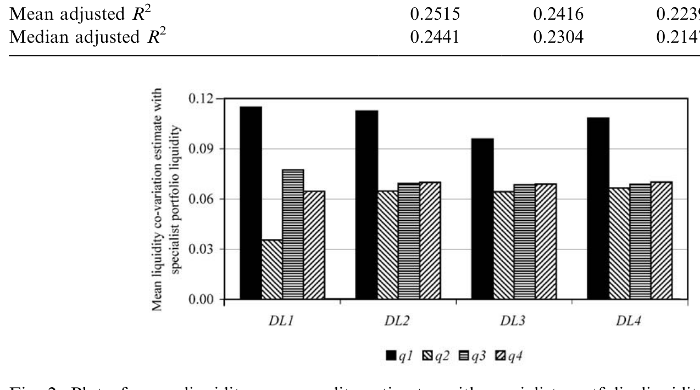
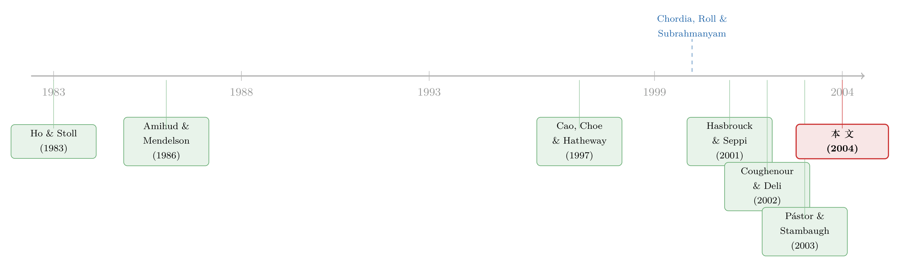

你和我手里的股票，为什么会一起「变难卖」——因为我们共用了同一个做市商
本文读的是 Coughenour & Saad (2004, Journal of Financial Economics)：纽交所的每一家专家（specialist）公司都同时为多只股票做市，这些股票因为「共用了一个做市商」、共享着同一池资本与库存信息，它们的流动性会一起涨落。作者把这种「供给端」的流动性共动从「需求端」中剥出来，发现它确实存在、且随着「提供流动性的风险」上升而增强——专家公司越小、刚被并购、或市场大跌时，共动越强。
1 一个被忽略的「源头」
先讲一个 2000 年前后让微观结构学界兴奋的发现：股票的流动性会一起动。
Chordia, Roll, and Subrahmanyam (2000)（下称 CRS）和 Hasbrouck and Seppi (2001) 先后指出，单只股票的买卖价差、报价深度，并不只是随它自己的供需在变——它还系统性地跟着「市场整体的流动性」一起涨落。这就是所谓的流动性共动 (commonality in liquidity)。这件事之所以重要，是因为如果流动性会系统性地一起枯竭，那么「流动性」本身就可能是一个被定价的风险源（Amihud and Mendelson, 1986；Brennan and Subrahmanyam, 1996；Pástor and Stambaugh, 2003）——市场最缺钱、最难脱手的那一刻，恰恰是所有人都想脱手的那一刻。
但发现一个现象，和理解它的来路，是两回事。
CRS 看到了共动，却说不清它从哪儿来。一个自然的猜测是：共动来自需求端。某个宏观冲击——比如一次利率意外——会让所有投资者同时想调仓，于是大家同时涌向市场要流动性，价差被一起推宽。这个故事很顺，但它有个麻烦：几乎任何一个能搅动「需求」的系统性因子，同时也会搅动「供给」。还是那次利率冲击，它在挑动你我换仓欲望的同时，也抬高了做市商扛库存的成本与风险。于是需求和供给纠缠在一起，谁也说不清共动到底是谁催出来的。
本文要做的，就是把这团乱麻里供给端的那一根线，干干净净地抽出来。
2 核心直觉：流动性是「谁」在供给
作者的切入点，朴素到几乎被所有人忽略：在纽交所，流动性不是凭空冒出来的，它是由一个个具体的「人」——专家——供给的。而每个专家公司，手里同时握着不止一只股票。
这意味着什么？设想一个极端情形：假设关于公司价值的信息毫无共同成分，完全随机地散落在各只股票上，于是各只股票的流动性需求彼此独立。即便在这种「需求端零共动」的世界里，流动性也仍然可能一起动——只要做市商允许一只股票上的盈亏，去影响他给另一只股票提供流动性的意愿。
为什么会这样？因为同一家专家公司里的专家们，共用一池资本、共享库存与盈亏信息。作者讲了一个来自纽交所现场的细节：在 LaBranche 这样的公司，每个交易台的屏幕上都实时显示着专家在每只股票上的盈亏；公司能跨所有股票汇总这张账。一个专家若想建一个异常大的头寸，得先向楼面主管（floor captain，本身也是专家）请示，主管再打电话给场外的董事。换句话说，一只股票上的损失会勒紧整个公司的资本约束，进而改变它给其他股票报价的底气。
这正是 Ho and Stoll (1983) 早就给出的理论预言：做市商对某只股票的行为，取决于这只股票的库存相对于他手里所有其他股票库存的位置。Gehrig and Jackson (1998) 进一步说，当专家公司持有的股票之间交易相关性较低时，库存成本能被分散掉。把这些拼起来，一个清晰的假说浮出水面：
共用一个做市商的股票，它们的流动性会正向共动；而共动的强弱，取决于这家做市商提供流动性的风险有多大——风险越大（资本越紧、越难分散），它越没法「独立地」给每只股票报价，共动就越强。
关于「做市商的风险承受能力如何反过来塑造价格」，这条逻辑与近年的一些工作一脉相承（可参见《无风险市场里的风险厌恶：是谁给做市商系上了「风险限额」这根绳》，以及《做市商的「一本账」：当一只股票的冲击，悄悄改写了另一只的报价》）。本文是这条逻辑在一个真实、可观测的做市商组织上的实证落地。
3 识别策略：把「市场」换成「专家组合」
怎么把供给端剥出来？作者的做法很巧，几乎只是在 CRS 的回归里换了一个右手边变量。
CRS 的基准模型，是把单只股票的流动性变化，回归到市场组合流动性的变化上（市场组合 = 样本里所有其他股票流动性的等权平均），系数就是那只股票的「流动性 beta」。作者沿用这个框架，但定义了一个新的解释变量——专家组合流动性 (specialist portfolio liquidity)：对股票 \(j\) 而言，就是「与 \(j\) 同属一家专家公司、但不含 \(j\) 自己」的那一篮子股票的平均流动性变化。
这里有个关键的「设计洁癖」：估计 \(j\) 的专家组合流动性时，要剔除 \(j\) 自己；同理，市场组合也要剔除掉 \(j\) 所在专家公司的全部股票。这样才能保证「专家共动」不是被 \(j\) 自己或某一只股票机械地带出来的。
然后是真正关键的一步——联合估计。光把市场流动性「替换成」专家组合流动性还不够，因为专家组合本身也是市场的一部分，两者高度相关。要想知道「单单因为共用做市商」额外带来多少共动，必须把市场流动性和专家组合流动性同时放进回归，让两个 beta 互相「净化」：
其中 \(\Delta L_{j,t}\) 是股票 \(j\) 在第 \(t\) 个时段流动性的变化，\(\Delta L_{M,t}\) 是市场组合流动性变化，\(\Delta L_{S,t}\) 是专家组合流动性变化。\(\beta^{S}_{j}\) 一旦在控制了 \(\beta^{M}_{j}\) 之后仍然显著为正，就说明：哪怕扣掉所有市场层面的共同因子，「仅仅因为两只股票共用了一个做市商」，它们的流动性也会额外地一起动。这正是供给端共动的干净证据。
还有一处与 CRS 的重要分别：本文用的是日内 (intraday) 数据，把每天切成上午、午间、下午三段来聚合。这是为了捕捉众所周知的日内价差形态（McInish and Wood, 1992）——这种形态会被「按日聚合」给抹平。这个看似技术性的选择，后面会带来一个让人意外的结果。
4 数据：259 只股票，10 家做市公司
样本期是 1999 年 6 月 1 日到 2000 年 12 月 31 日，共 19 个月——之所以从 1999 年 6 月起，是因为纽交所的每日专家名录文件 (specialist directory) 在此之前不存在，而正是这份名录，让作者能把每只股票精确地匹配到它的专家公司。
- 数据来自纽交所的 TAQ (Trade and Quote) 成交与报价库。
- 从最大的 500 只股票出发，经过价格（$4–$200）与交易活跃度（每个日内时段至少 2 笔、平均至少 20 笔）等五道筛选，剩下
470只普通股。样本股平均每时段成交252.4笔、美元成交额超$19.7百万。 - 真正用来度量「专家共动」的，是工作样本 (working sample)：要求一只股票在整个 19 个月里始终留在同一家专家公司，且该公司在样本里至少有 10 只达标股票。最终是
259只股票，分属10家专家公司。
这段样本期本身就是一段微观结构的活历史。1999 年 6 月还有 31 家专家公司在营业，到 2000 年底，因为 13 起并购只剩 18 家。这种剧烈的行业整合，恰好为作者送来了天然的实验素材——后面的并购检验正是建立在此之上。
5 主要结果：共动存在，但「同门」不是主角
第一步，先把 CRS 复制一遍。 作者重做了「单只股票流动性 vs 市场流动性」的市场模型，确实得到了一个显著为正的平均流动性 beta，方向与 CRS 一致。但有个数字格外扎眼：本文回归的 \(R^2\) 超过 22%，而 CRS 报告的只有约 1%。差了二十多倍。这是哪来的？作者顺手做了个对照：把自己的数据改回按日聚合，调整后 \(R^2\) 立刻从 22% 跌到约 3%。
这个对照说明：所谓「流动性共动只有 1%、弱得可疑」，很可能是日度聚合把日内的共同变动给平滑掉了。 用日内数据看，流动性共动其实比之前以为的强得多——这反过来给「流动性是被定价的风险」提供了更有力的支持，也间接回应了 Hasbrouck and Seppi (2001) 对共动「证据微弱」的存疑。
第二步，把市场换成专家组合。 当作者用专家组合流动性替换市场流动性时，得到一个显著为正的专家流动性 beta，量级大约是市场流动性 beta 的三分之二 (≈ 2/3)。乍看之下，「同门效应」似乎相当可观。
但真正关键的一步，是联合估计。 当把市场流动性和专家组合流动性同时放进回归、让专家 beta 只承载「市场之外」那部分变动时，专家流动性 beta 缩水到只有市场流动性 beta 的八分之一 (≈ 1/8)——但依旧显著为正。
这是一个诚实的、带着反转意味的结论：
共用做市商确实会制造流动性共动，这一点经得起最严格的净化检验；但它的份量只有市场层面因子的约八分之一。换句话说，主导个股流动性命运的，仍是那些影响全市场的力量；「同门」是一条真实存在、却次要的暗线。
作者没有为了把故事讲得更性感而夸大 1/8 这个数字，这恰恰是这篇论文可信的地方。
6 反转的反转：风险越大，「同门」越要命
如果故事到这里就结束，那它只是「又找到了一个二阶因子」。真正让这篇论文站住的，是接下来三个横截面与时序的检验——它们直接去验证那个机制假说：共动随「提供流动性的风险」上升而增强。
检验一：专家公司规模。 大公司有更强的分散化、更低成本的资本，因此更有底气「独立地」给每只股票报价。预言是：公司越大，旗下股票的流动性共动越弱。证据吻合——专家组合共动估计与专家公司规模之间，是显著的负相关。
检验二：专家公司并购（8 起）。 这是最干净的一招。当一只股票所属的专家公司被并购、规模骤然变大，按上面的逻辑，它的流动性共动应当下降。作者盯住样本期内的 8 起并购，发现并购之后，相关股票的流动性共动估计显著减小。注意这与 Hatch and Johnson (2002) 不同——他们看的是并购后流动性水平（价差）的改善，本文看的是并购后流动性「一起动」的程度的变化，是两件事。
检验三：市场方向。 这是全文最漂亮的时序检验。当市场大跌时，专家公司（通常净多头）的财富缩水、共享的资本约束被绷得更紧，提供流动性的成本与风险都上升——1987 年 10 月的暴跌曾把好几家专家公司逼到破产边缘。于是预言是：在市场大幅负收益的时段，同门股票之间的流动性共动应当更强。 证据再次吻合：个股流动性与专家组合流动性的共动，在市场出现较大负收益时显著更高（如图 2 所示）。

Figure 2: Plot of mean liquidity commonality estimates with specialist portfolio liquidity conditional on
三个检验，三个方向，全部指向同一个机制：不是「股票天生相似」让它们的流动性一起动，而是「供给流动性的那个人」在压力之下，被迫把一只股票的麻烦传导给了另一只。 当他越缺钱、越扛不住风险，这种传导就越强。这正是供给端共动机制最有说服力的指纹。
7 文献脉络
把这篇论文放回它的坐标系，能看得更清楚。
最早，微观结构关心的是单个做市商的烦恼：怎么在扛着库存风险（Garman, 1976；Stoll, 1978；Ho and Stoll, 1981；O'Hara and Oldfield, 1986）和逆向选择风险（Copeland and Galai, 1983；Glosten and Milgrom, 1985；Easley and O'Hara, 1987）的同时报出价差。这一脉里，Ho and Stoll (1983) 迈出了关键一步——他们指出做市商是按整个组合而非单只股票来管理库存的，这恰恰是本文的理论种子。
接着，世纪之交，CRS (2000) 和 Hasbrouck and Seppi (2001) 把镜头从「单只股票」拉到「整个横截面」，发现了流动性共动。但两篇给出的强度差异很大（CRS 的 \(R^2 \approx 1\%\)，Hasbrouck-Seppi 则称证据微弱），共动到底强不强、又从哪来，悬而未决。与此同时，Amihud and Mendelson (1986)、Brennan and Subrahmanyam (1996)、Pástor and Stambaugh (2003) 一路把「流动性是被定价的风险」这条线铺开——这让「搞清楚共动来路」显得愈发要紧。

另一条线则在打量专家公司本身的异质性：Cao, Choe, and Hatheway (1997) 与 Corwin (1999) 记录了不同专家公司在价差、停牌、稳定市场上的差异；Coughenour and Deli (2002) 进一步证明专家公司的组织形式会影响它的资本成本与承险意愿。
本文（Coughenour and Saad, 2004）正是这两条线的交汇点：它借 CRS 的方法论之壳，装进 Ho-Stoll 的组合库存之魂，再用专家公司的异质性（规模、并购、市场压力）去验证机制。它告诉我们：流动性共动不全是抽象的「市场因子」，其中有一块，实实在在地写在「谁在替这只股票做市」这件事上。
关于「股与债的流动性是否听同一个人说话」这个更宏大的版本，可参见《市场快「干涸」的那一刻：股与债的流动性，原来听的是同一个人》；而把「做市商即中介」推到 OTC 市场的经典框架，可参见《价格里那道折扣，量的是「找不到买家」的时间》。
8 评论与延伸（Q&A + 研究方向）
(a) 几个可能的疑问
Q：为什么联合估计后专家 beta 从 2/3 暴跌到 1/8，这是不是说明「同门效应」其实可有可无？
不能这么说。2/3 是「替换式」估计，它把专家组合里包含的市场成分也算进去了，自然偏高；1/8 才是净化后的边际贡献。重点是：经过最严格的净化，它依然显著为正——这才是干净的供给端证据。1/8 不大，但「存在且可识别」本身就是贡献，作者也很克制地没有夸大它。
Q：股票被同一家公司做市，会不会本身就因为「同行业、同规模」而需求端共动，从而污染结果？
这正是作者最警惕的内生性。他们专门检查了每家专家组合内部的行业与规模分布，并在设计上剔除 \(j\) 自己、市场组合也剔除整家公司，尽量切断「同类股票需求一起动」这条替代解释。真正让人信服的是机制检验：规模、并购、市场方向三个独立维度若都是需求端故事，很难同时、同方向地成立。
Q：日内数据把 \(R^2\) 从 1% 抬到 22%，这会不会是「过度聚合到日内」制造的虚高？
作者用同一套数据按日聚合做了对照，\(R^2\) 落回约 3%，说明差异确实来自聚合频率而非数据本身。日内共动更高是合理的——价差的日内形态（开盘宽、午间窄）本就是共同的，按日平均会把它平滑掉。当然，越细的频率也意味着流动性估计噪声更大，尤其对低频交易的股票，这是该方法的代价。
Q：并购检验只有 8 起，样本是不是太小？
确实小，这是 19 个月样本期的硬约束，作者也坦承横截面检验最终只落在 10 家公司上。但并购是「同一只股票前后对比」的准自然实验，识别力来自时序变化而非截面数量；再叠加规模与市场方向两个独立检验都同向，整体证据链比单看 8 起要稳。
Q：这个发现今天还成立吗？纽交所专家制度早就名存实亡了。
机制比制度更持久。专家被「指定做市商」(DMM) 和自动化撮合取代，但「同一个中介、同一池资本、同时为多只资产做市」这个结构在公司债交易商、ETF 授权参与商、做市做空机构身上依然存在。论文真正的遗产，是给出了一个可检验的框架：只要流动性由共享资本的中介供给，资产的流动性就会沿着「谁替它做市」聚成簇。
Q：如果共动主要由市场因子主导，那「priced liquidity risk」的故事是不是和本文关系不大？
关系在于：本文用日内数据把共动的总强度抬上去了（22% vs 1%），这本身就加固了「流动性是系统性风险」的前提；同时它指出共动里有一块是供给端的、可被中介结构解释的——这对如何对冲和定价流动性风险有含义：你或许能通过分散「做市商敞口」来部分规避它。
(b) 几个可能的研究问题与提案
1. 公司债市场的「共同交易商」共动。 【经济故事】公司债是交易商市场（dealer market），一家交易商同时为成百上千只债券做市，且资本约束远比股票专家更紧。本文逻辑几乎可以原样搬过来：共用一个交易商的债券，流动性应当更强地共动，且在交易商资产负债表承压时（如季末、监管考核日、信用利差走阔时）共动加剧。 【可行性】高。TRACE 提供成交数据，配合 FINRA 的交易商识别（或 MSRB），可把每只债券匹配到主要做市交易商。识别可借鉴本文的「联合估计 + 交易商规模/并购」三件套，外加 2008、2020 两次流动性危机做时序检验（可呼应《差点死掉的那个市场》）。
2. 外资做市商 vs 本土做市商：流动性簇的国别边界。 【经济故事】在新兴市场，外资中介与本土中介的资本成本、风险偏好、撤离倾向都不同。若「共用做市商」决定流动性如何聚簇，那么由外资交易商主导做市的资产，应当在全球风险冲击（VIX 跳升、美元走强）时一起枯竭，形成一个跨境的供给端流动性簇。 【可行性】中。需要能识别每只资产主要做市商国籍的数据（部分交易所或托管数据可得），识别上可用全球风险冲击作为外生时序变量。难点在做市商身份的精确匹配。
3. 做市商并购的「流动性传染半径」。 【经济故事】本文显示并购降低了共动（分散化变好）。但反过来：当两家做市商合并，原本属于 A 的股票和原本属于 B 的股票，会不会新长出一条共动暗线？并购既能分散风险，也可能把两簇资产的流动性命运捆到同一张资产负债表上。 【可行性】高。事件研究框架，比较并购前后「跨原公司股票对」的流动性共动变化，控制同行业配对。股票（DMM 合并）与公司债（交易商合并）都可做。
4. 把「做市商敞口」做成一个可定价的风险因子。 【经济故事】如果流动性沿做市商聚簇，那么持有「同一做市商重仓资产」的组合，就承担了一个集中的供给端流动性风险。能否构造一个「做市商集中度」因子，检验它是否带来横截面收益溢价？ 【可行性】中。需长期、稳定的资产—做市商映射（股票 DMM 数据近年才较完整），识别上要把该因子与已有流动性因子（Pástor-Stambaugh、Amihud）正交化，证明它有增量定价能力。
我的判断
这篇论文最让我欣赏的，是它的克制。它本可以把「2/3」这个大数字端出来邀功，却老老实实做了联合估计，告诉你净化之后只剩「1/8」——然后用三个独立维度的机制检验，把这「1/8」钉死成一个真实、可识别、有经济来源的效应。它没有声称供给端是主角，只是证明了它确实在场。这种「小而硬」的实证，比许多追求大系数的论文更可信。
对识别的担忧主要有两点。其一，横截面最终只落在 10 家专家公司、8 起并购上，统计功效有限，结论更多靠多个维度的「证据一致性」而非任一单点的力量。其二，「剔除自身、剔除整家公司」的设计虽已尽力切断需求端污染，但同一家专家公司选择做市的股票本就可能内生地相似（专家会挑自己懂的行业），这条选择效应很难被完全排除。
后续我最想看到的，是把这套逻辑搬到约束更紧、危机更频的市场去——尤其是公司债与新兴市场，那里做市商的资本约束才是真正会「咬人」的地方，本文那条「风险越大、共动越强」的暗线，理应在那里显形得更清楚。
参考文献
- Amihud, Y., Mendelson, H. (1986). Asset pricing and the bid–ask spread. Journal of Financial Economics 17, 223–249.
- Brennan, M., Subrahmanyam, A. (1996). Market microstructure and asset pricing: on the compensation for illiquidity in stock returns. Journal of Financial Economics 41, 441–464.
- Cao, C., Choe, H., Hatheway, F. (1997). Does the specialist matter? Differential execution costs and inter-security subsidization on the NYSE. Journal of Finance 52, 1615–1640.
- Chordia, T., Roll, R., Subrahmanyam, A. (2000). Commonality in liquidity. Journal of Financial Economics 56, 3–28.
- Corwin, S.A. (1999). Differences in trading behavior across NYSE specialist firms. Journal of Finance 54, 721–745.
- Coughenour, J., Deli, D. (2002). Liquidity provision and the organizational form of NYSE specialist firms. Journal of Finance 56, 841–869.
- Coughenour, J.F., Saad, M.M. (2004). Common market makers and commonality in liquidity. Journal of Financial Economics 73, 37–69.
- Gehrig, T., Jackson, M. (1998). Bid–ask spreads with indirect competition among specialists. Journal of Financial Markets 1, 89–119.
- Hasbrouck, J., Seppi, D.J. (2001). Common factors in prices, order flows, and liquidity. Journal of Financial Economics 59, 383–411.
- Hatch, B., Johnson, S. (2002). The impact of specialist firm acquisitions on market quality. Journal of Financial Economics 66, 139–167.
- Ho, T., Stoll, H.R. (1983). The dynamics of dealer markets under competition. Journal of Finance 38, 1053–1074.
- McInish, T.H., Wood, R.A. (1992). An analysis of intraday patterns in bid/ask spreads for NYSE stocks. Journal of Finance 47, 753–764.
- Pástor, L., Stambaugh, R. (2003). Liquidity risk and expected stock returns. Journal of Political Economy 111, 642–685.